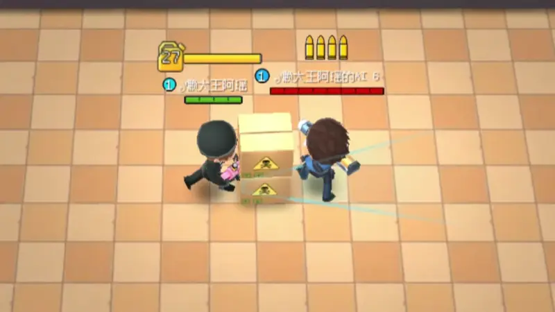

喷火枪
基本信息
| 伤害间隔:0.19~0.13s | 伤害:12[逃]13[追] | 换弹时间:2.8/2.5/2s |
|---|---|---|
| 升级金币:200/250/300 | 弹匣价格:100 | 约5.5格的扇形范围，最远端宽为2格，能够适应墙体拐弯的情况 |
武器定位:场景交互|群体伤害|持续伤害
现有皮肤
| 初始皮肤 |  | 4级皮肤 |  |
|---|---|---|---|
| 7级皮肤 |  | 7级皮肤[风格] |  |
特殊机制-灼烧buff
喷火枪是第一个可以改变场景的道具卡，其核心特殊机制便是灼烧 buff
基础
等级与伤害
buff 等级 每秒伤害-逃生 每秒伤害-追捕 核心特性 1 阶段 
1 点 1 点 低额持续伤害，主要用于叠加层数与持续暴露视野 2 阶段 
1 点 1 点 低额持续伤害，为触发 3 阶段高额伤害做铺垫 3 阶段 
12 点 13 点 高额爆发伤害，是喷火枪造成核心输出的关键阶段
核心差异：1/2 阶段为低额持续伤害，3 阶段为高额爆发伤害
持续与升级机制
持续时间：所有等级的 buff 附着后，默认持续时间为 5 秒
升级机制：喷火枪的攻击具有独特的叠层强化逻辑对同一目标每攻击 1 次，buff 等级提升 1 级（首次攻击→1 级，第二次→2 级，第三次→3 级），3 级为最高等级
时间重置：后续攻击仅重置持续时间，无法继续升级
燃烧交互机制
草丛
燃烧触发：当草丛被喷火枪攻击 3 次后，触发草丛燃烧消失效果
消失时长：草丛消失后会持续 30 秒，在这期间，草丛无法作为隐藏点，区域位置会暴露出来
与 buff 联动：草丛燃烧时，处于其中的玩家会直接获得 1 阶段灼烧 buff，无需额外攻击
战略意义
短期战术压制：主动发射火焰驱散隐蔽草丛，强制暴露敌方位置。灼烧效果触发移速减缓、视野弱化等负面状态，有效瓦解敌方 “蹲草突袭” 的伏击战术
需在 “掌控视野主动权” 与 “暴露自身位置” 间权衡：敌方大概率蹲草时，优先灼烧草丛；自身处于劣势或敌方有集火能力时，谨慎使用避免被针对
长期战场重构：持续喷射的火焰可烧毁可破坏草丛，消除敌方天然掩体，将伏击地形转化为开阔地带，从根本上改变战场博弈格局
可提前规划灼烧区域，逐步压缩敌方活动空间，为团队推进创造有利地形
保险柜 / 逃生门 / 禁闭室门
灼烧附着：对建筑累计攻击 2 次后，建筑获得 5 秒 “灼烧 buff 附着状态”
精准封锁关键点位：在守保险柜、堵门等场景，灼烧建筑可迫使敌方在 “承受 buff 伤害” 与 “放弃目标” 间抉择，干扰敌方战术节奏
范围影响：建筑处于灼烧附着状态时，0.5 格以内的敌方玩家会被自动施加 1 阶段灼烧 buff，且该状态的持续时间无法通过重复进入刷新
配合团队围堵：与队友协作，在建筑附近形成包围圈，利用 buff 持续消耗敌方血量，提升击杀 / 拦截成功率
机制限制
阶段覆盖规则：当玩家已持有 2 阶段或 3 阶段增益效果时，建筑提供的 1 阶段增益将无法生效。
时效独立机制：建筑赋予的 5 秒附着状态采用独立计时，玩家重复攻击建筑不会延长持续时间，仅在重新触发附着效果时刷新计时。
BUFF传递
触发条件：同阵营玩家互相靠近至约 2 格范围内
灼烧效果：敌方单位被施加灼烧 buff 后，其位置将持续暴露给我方阵营
传递规则
传递条件：仅当传递者拥有 3 阶段灼烧 buff 时，方可进行传递操作
buff 限制：每次仅能传递 1 阶段灼烧 buff，且不可覆盖目标已有的 2/3 阶段灼烧 buff
时效规则：从传递动作完成的瞬间起，buff 传递效果持续 5 秒
团队意义：此机制显著强化同阵营间的协作能力；例如，追捕者可通过攻击释加 buff，扩大视野范围，有效增强战场感知能力，强化队伍控场能力
其他机制
与场景小道具的交互
与场景小道具的交互分为两种
| 道具类型 | 交互效果 | 示意图 |
|---|---|---|
| 矮道具[如小型箱子桌子] | 火焰可穿过道具同时可击退道具 |  |
| 高道具[如大型桌子] | 火焰不可穿过道具但可击退道具 |  |
特殊情况
高道具近距离的情况下，火焰不可穿过道具但可击退道具与造成伤害

高度差
由于武器攻击高度起始约为 1 格
所以当逃生者跳跃时，或角色踩在小道具[如箱子、仙人掌]上时，无法攻击到敌对阵营
明确喷火枪在不同阵营中的适用性
1.逃生者使用喷火枪时需注意自身位置，避免跳跃或站在小道具上攻击，影响输出时机
2.因逃生者核心目标为 “逃生”，喷火枪的 “场景交互 + 持续输出” 特性更适配追捕者的 “拦截 + 控场” 需求

人造物与喷火枪之间的交互
1.气垫
气垫可造成弹道转弯

2.阻挡箱
阻挡箱可造成弹道转弯

3.噗噗蛋
噗噗蛋不可造成弹道转弯，但是可以使噗噗蛋立马造成缴械

射速
本项只针对13级-击倒追捕
| 攻击方式 | 无针击倒时长 | 有针击倒时长 | 推荐场景 |
|---|---|---|---|
| 点按攻击 | 2.22s | 2.22s | 近距离攻击（避免火焰扩散浪费输出）、追击敌方（灵活调整攻击方向） |
| 长按攻击 | 2.22s | 2.16s | 敌方人数较多时（群体伤害覆盖，提升整体输出效率） |
推荐近距离点按/追击时点按，人物数量多时长按
| 无针击倒对比|左长按右点按 | 有针击倒对比|左点按右长按 |
|---|---|
 |  |
| 点摁有无针击倒对比|左有针右无针 | 长摁有无针击倒对比|左无针右有针 |
 |  |